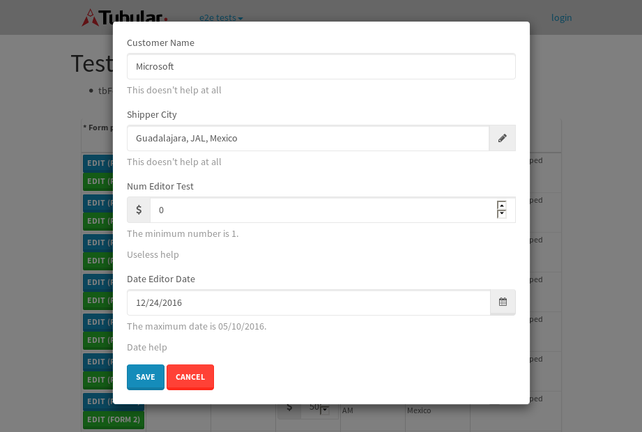

tbColumn.Grid Sorting - 30.212sTests: 5Skipped: 0Failures: 0 should sort data in ascending order then on descending order when sorting by Order Id column - 6.336sTests passed: 100.00%should order data in ascending order when click-sorting an unsorted text column - 5.244sTests passed: 100.00%should order data in descending order when click-sorting an ascending-sorted text column - 7.032sTests passed: 100.00%should order data in ascending order when click-sorting an unsorted date column - 5.327sTests passed: 100.00%should order data in descending order when click-sorting twice an unsorted date column - 6.271sTests passed: 100.00%
tbColumn.Grid Components - 4.049sTests: 3Skipped: 0Failures: 0 should print grid - 1.478s***Skipped***Tests passed: 0%should export grid - 1.37s***Skipped***Tests passed: 0%should show column selector - 1.201sTests passed: 100.00%
tbSingleForm.Form validations - 1.803sTests: 2Skipped: 0Failures: 0 should have an empty required field - 0.987sTests passed: 100.00%should not be able to click on save - 0.816sTests passed: 100.00%
Tubular Filters.tbColumnFilter - 114.748sTests: 12Skipped: 0Failures: 0 should cancel filtering when clicking outside filter-popover - 9.871sTests passed: 100.00%should disable Value text-input for "None" filter - 6.803sTests passed: 100.00%should disable apply button for "None" filter - 6.791sTests passed: 100.00%should decorate popover button when showing data is being filtered for its column - 12.937sTests passed: 100.00%should correctly filter data for the "Equals" filtering option - 10.211sTests passed: 100.00%should correctly filter data for the "Not Equals" filtering option - 9.344sTests passed: 100.00%should correctly filter data for the "Contains" filtering option - 8.888sTests passed: 100.00%should correctly filter data for the "Not Contains" filtering option - 9.841sTests passed: 100.00%should correctly filter data for the "Starts With" filtering option - 6.739sTests passed: 100.00%should correctly filter data for the "Not Starts With" filtering option - 7.18sTests passed: 100.00%should correctly filter data for the "Ends With" filtering option - 7.462sTests passed: 100.00%should correctly filter data for the "Not Ends With" filtering option - 7.265sTests passed: 100.00%
Tubular Filters.tbColumnDateTimeFilter - 144.571sTests: 12Skipped: 0Failures: 0 should cancel filtering when clicking outside filter-popover - 7.77sTests passed: 100.00%should disable Value text-input for "None" filter - 6.737sTests passed: 100.00%should disable apply button for "None" filter - 7.077sTests passed: 100.00%should clear filtering when clicking on Clean button - 18.912sTests passed: 100.00%should decorate popover button when showing data is being filtered for its column - 12.796sTests passed: 100.00%should correctly filter data for the "Equals" filtering option - 7.865sTests passed: 100.00%should correctly filter data for the "Not Equals" filtering option - 9.121sTests passed: 100.00%should correctly filter data for the "Between" filtering option - 14.259sTests passed: 100.00%should correctly filter data for the "Greater-or-equal" filtering option - 13.007sTests passed: 100.00%should corretlly filter data for the "Greater" filtering option - 12.756sTests passed: 100.00%should correctly filter data for the "Less-or-equal" filtering option - 11.807sTests passed: 100.00%should correctly filter data for the "Less" filtering option - 11.734sTests passed: 100.00%
Tubular Filters.tbColumnOptionsFilter - 86.529sTests: 3Skipped: 0Failures: 0 should cancel filtering when clicking outside filter-popover - 10.276sTests passed: 100.00%should decorate popover button when showing data is being filtered for its column - 12.784sTests passed: 100.00%should filter column-elements in accordance to the selected filter when selecting a single option - 52.113sTests passed: 100.00%
Tubular Filters.tbTextSearch - 50.646sTests: 5Skipped: 0Failures: 1 min-chars is not set - 0.867sTests passed: 100.00%should filter data in searchable-column customer name to matching inputted text, starting from 3 characters - 7.25sTests passed: 100.00%should filter data in searchable-column shipper city to matching inputted text, starting from 3 characters - 13.891sTests passed: 100.00%should show clear button when there is inputted text only - 6.452sTests passed: 100.00%should clear filtering when clicking clear button - 16.462sExpected 10 not to be 10.✗Tests passed: 0.00%
tbForm related components.tbCheckboxField - 8.493sTests: 2Skipped: 0Failures: 0 should save changes on "SAVE" - 4.274sTests passed: 100.00%should discard changes on "CANCEL" - 2.269sTests passed: 100.00%
tbForm related components.tbDropDownEditor - 12.918sTests: 5Skipped: 0Failures: 0 should set initial input value to the value of "value" attribute when defined - 1.73sTests passed: 100.00%should show the component name value in a label field when "showLabel" attribute is true - 2.724sTests passed: 100.00%should show a help field equal to this attribute, is present - 1.926sTests passed: 100.00%should submit modifications to item/server when clicking form "Save" - 3.222sTests passed: 100.00%should NOT submit modifications to item/server when clicking form "Cancel" - 2.589sTests passed: 100.00%
tbForm related components.tbTextArea - 17.357sTests: 7Skipped: 0Failures: 0 should set initial input value to the value of "value" attribute when defined - 2.017sTests passed: 100.00%should be invalidated when the number of chars is not in the range of "min" and "max" attributes - 2.194sTests passed: 100.00%should show the component name value in a label field when "showLabel" attribute is true - 1.674sTests passed: 100.00%should show a help field equal to this attribute, is present - 2.406sTests passed: 100.00%should require the field when the attribute "required" is true - 2.052sTests passed: 100.00%should submit modifications to item/server when clicking form "Save" - 3.186sTests passed: 100.00%should NOT submit modifications to item/server when clicking form "Cancel" - 2.773sTests passed: 100.00%
tbForm related components.tbDateEditor - 20.88sTests: 6Skipped: 0Failures: 4 should set initial date value to the value of "value" attribute when defined - 2.674sExpected false to be true.✗Tests passed: 0.00%should be invalidated when the date is not in the range of "min" and "max" attributes - 4.794sExpected false to be true.✗Expected 1 to be less than 1.✗Tests passed: 33.33%should show the component name value in a label field when "showLabel" attribute is true - 2.903sTests passed: 100.00%should show a help field equal to this attribute, is present - 2.848sTests passed: 100.00%should submit modifications to item/server when clicking form "Save" - 3.382sExpected false to be true.✗Tests passed: 0.00%should NOT submit modifications to item/server when clicking form "Cancel" - 2.606sExpected false to be true.✗Tests passed: 0.00%
tbForm related components.tbTypeaheadEditor - 20.328sTests: 7Skipped: 0Failures: 1 should show an options list when there is an API-info/component entered-data - 2.166sTests passed: 100.00%should select the option clicked - 2.49sTests passed: 100.00%should show a "delete" button when an option/match is selected, and delete the option if button is clicked - 3.172sFailed: each key must be a number of string; got boolean✗Tests passed: 50.00%should show a label value equal to the component name when "showLabel" attribue is true - 2.427sTests passed: 100.00%should require a value when "require" attribute is true - 2.261sTests passed: 100.00%should submit modifications to item/server when clicking form "Save" - 4.156sTests passed: 100.00%should NOT submit modifications to item/server when clicking form "Cancel" - 2.373sTests passed: 100.00%
tbForm related components.tbSimpleEditor - 24.311sTests: 9Skipped: 0Failures: 1 should set initial input value to the value of "value" attribute when defined - 2.209sTests passed: 100.00%should be invalidated when the number of chars is not in the range of "min" and "max" attributes - 3.303sTests passed: 100.00%should show the component name value in a label field when "showLabel" attribute is true - 2.239sTests passed: 100.00%should set input placeholder to the value of "placeholder" attribute - 2.065sTests passed: 100.00%should validate the control using the "regex" attribute, if present - 2.61sFailed: each key must be a number of string; got function✗Tests passed: 0.00%should show a help field equal to this attribute, is present - 2.01sTests passed: 100.00%should require the field when the attribute "required" is true - 2.189sTests passed: 100.00%should submit modifications to item/server when clicking form "Save" - 3.384sTests passed: 100.00%should NOT submit modifications to item/server when clicking form "Cancel" - 3.285sTests passed: 100.00%
tbForm related components.tbNumericEditor - 19.468sTests: 7Skipped: 0Failures: 0 should set initial component value to the value of "value" attribute when defined - 1.804sTests passed: 100.00%should be invalidated when the entered number is not in the range of "min" and "max" attributes - 2.5sTests passed: 100.00%should show the component name value in a label field when "showLabel" attribute is true - 2.437sTests passed: 100.00%should show a help field equal to this attribute, is present - 1.924sTests passed: 100.00%should require the field when the attribute "required" is true - 2.219sTests passed: 100.00%should submit modifications to item/server when clicking form "Save" - 4.612sTests passed: 100.00%should NOT submit modifications to item/server when clicking form "Cancel" - 2.949sTests passed: 100.00%
tbForm Connection Error - 2.863sTests: 1Skipped: 0Failures: 0 tbForm connection error functionality - 0.447sTests passed: 100.00%
tbForm Connection Error - 2.777sTests: 1Skipped: 0Failures: 0 tbForm connection error functionality - 0.562sTests passed: 100.00%
tbForm Connection Error - 2.539sTests: 1Skipped: 0Failures: 1 tbForm connection error functionality - 0.411sExpected '' to equal 'No data found'.✗Tests passed: 0.00%
tb Form Date Editor.tbDateEditor - 22.994sTests: 6Skipped: 0Failures: 0 should set initial date value to the value of "value" attribute when defined - 2.131sTests passed: 100.00%should be invalidated when the date is not in the range of "min" and "max" attributes - 3.349sTests passed: 100.00%should show the component name value in a label field when "showLabel" attribute is true - 2.398sTests passed: 100.00%should show a help field equal to this attribute, is present - 3.3sTests passed: 100.00%should submit modifications to item/server when clicking form "Save" - 3.754sTests passed: 100.00%should NOT submit modifications to item/server when clicking form "Cancel" - 4.047sTests passed: 100.00%
tbGridComponents - 9.94sTests: 6Skipped: 0Failures: 0 should add item with newRow method - 2.173sTests passed: 100.00%should add item with newRow method and cancel action - 0.747sTests passed: 100.00%should update item with tbSaveButton - 1.489sTests passed: 100.00%should update item with tbSaveButton and cancel action - 1.684sTests passed: 100.00%should remove item with tbRemoveButton - 1.346sTests passed: 100.00%should remove item with tbRemoveButton and cancel action - 0.88sTests passed: 100.00%
tbGridPager.navigation buttons - 11.066sTests: 1Skipped: 0Failures: 0 should perform no action when clicking on the numbered navigation button corresponding to the current-showing results page - 2.182sTests passed: 100.00%
tbGridPager.navigation buttons.first/non-last results page related functionallity - 4.14sTests: 2Skipped: 0Failures: 0 should disable "first" and "previous" navigation buttons when in first results page - 2.144sTests passed: 100.00%should enable "last" and "next" navigation buttons when in a results page other than last - 1.996sTests passed: 100.00%
tbGridPager.navigation buttons.last/non-first results page related functionallity - 4.742sTests: 2Skipped: 0Failures: 0 should disable "last" and "next" navigation buttons when in last results page - 1.928sTests passed: 100.00%should enable "first" and "previous" navigation buttons when in a results page other than first - 2.814sTests passed: 100.00%
tbGridPager.page navigation - 7.793sTests: 5Skipped: 0Failures: 0 should go to next results page when clicking on next navigation button - 1.819sTests passed: 100.00%should go to previous results page when clicking on previous navigation button - 1.732sTests passed: 100.00%should go to last results page when clicking on last navigation button - 1.525sTests passed: 100.00%should go to first results page when clicking on first navigation button - 1.349sTests passed: 100.00%should go to corresponding results page when clicking on a numbered navigation button - 1.367sTests passed: 100.00%
tbGridPagerInfo - 5.253sTests: 2Skipped: 0Failures: 0 should show text in accordance to numbered of filter rows and current results-page - 1.807sTests passed: 100.00%should show count in footer - 0.416sTests passed: 100.00%
tbHttp - 25.749sTests: 8Skipped: 0Failures: 0 should be authenticated - 5.044sTests passed: 100.00%retrieve data - 2.44sTests passed: 100.00%should not login bad credentials - 2.936sTests passed: 100.00%should have a refresh token - 2.532sTests passed: 100.00%should remove authentication - 2.51sTests passed: 100.00%get method-Is not authenticated - 2.667sTests passed: 100.00%post method-Is not authenticated - 4.616sTests passed: 100.00%should regenerate access token on post - 3.004sTests passed: 100.00%
LocalData.Grid Local Data Sorting - 8.522sTests: 4Skipped: 0Failures: 1 should order data in ascending order when click-sorting an unsorted text column - 1.965sTests passed: 100.00%should order data in descending order when click-sorting an ascending-sorted text column - 2.478sTests passed: 100.00%should correctly filter data for the "Contains" filtering option - 1.554sFailed: Element is not enabled✗Tests passed: 0.00%should correctly filter data for the "Contains" with ENTER key - 2.523sTests passed: 100.00%
OData.Grid OData Sorting - 47.419sTests: 7Skipped: 0Failures: 1 should order data in ascending order when click-sorting an unsorted numeric column - 8.633sTests passed: 100.00%should order data in descending order when click-sorting an ascending-sorted numeric column - 8.196sTests passed: 100.00%should order data in ascending order when click-sorting an unsorted text column - 3.581sTests passed: 100.00%should order data in descending order when click-sorting an ascending-sorted text column - 6.188sTests passed: 100.00%should order data in ascending order when click-sorting an unsorted date column - 6.418sTests passed: 100.00%should order data in descending order when click-sorting an ascending-sorted date column - 7.897sTests passed: 100.00%should correctly filter data for the "Contains" filtering option - 6.504sFailed: Element is not enabled✗Tests passed: 0.00%
tbPageSizeSelctor - 26.553sTests: 4Skipped: 0Failures: 0 should filter up to 10 data rows per page when selecting a page size of "10" - 5.18sTests passed: 100.00%should filter up to 20 data rows per page when selecting a page size of "20" - 3.689sTests passed: 100.00%should filter up to 50 data rows per page when selecting a page size of "50" - 8.387sTests passed: 100.00%should filter up to 100 data rows per page when selecting a page size of "100" - 7.514sTests passed: 100.00%
tbRowSelectable - 16.047sTests: 2Skipped: 0Failures: 0 selected rows - 7.471sTests passed: 100.00%unselected rows - 4.715sTests passed: 100.00%
tbSingleForm.Form fields - 16.986sTests: 7Skipped: 0Failures: 1 should load correct info - 1.096sTests passed: 100.00%should change customer name - 1.398sTests passed: 100.00%should save it - 4.337sFailed: Element is not enabled✗Tests passed: 0.00%should clear the inputs - 0.966sTests passed: 100.00%should update - 1.439sTests passed: 100.00%should reset editor - 4.7sTests passed: 100.00%should not save if not Changes - 3.049sTests passed: 100.00%
tbSingleForm.Form validations - 2.168sTests: 2Skipped: 0Failures: 0 should load correct info - 0.902sTests passed: 100.00%should not be able to click on save - 1.266sTests passed: 100.00%
tubularTemplateServiceModule.#createColumns() - 1.821sTests: 2Skipped: 0Failures: 0 should return an array with 7 elements - 0.788sTests passed: 100.00%first element should match - 1.033sTests passed: 100.00%
tubularTemplateServiceModule.#generateFieldsArray() - 2.25sTests: 2Skipped: 0Failures: 0 should return an array with 7 elements - 0.857sTests passed: 100.00%first element should match - 1.393sTests passed: 100.00%
tubularTemplateServiceModule.#generatePopup() - 0.924sTests: 1Skipped: 0Failures: 0 should html match - 0.924sTests passed: 100.00%
tubularTemplateServiceModule.#getEditorTypeByDateType() - 3.415sTests: 4Skipped: 0Failures: 0 should be tbDateTimeEditor - 1.021sTests passed: 100.00%should be tbNumericEditor - 0.756sTests passed: 100.00%should be tbCheckboxField - 0.837sTests passed: 100.00%should be tbSimpleEditor - 0.801sTests passed: 100.00%
tubularTemplateServiceModule.#generateForm() - 3.285sTests: 3Skipped: 0Failures: 0 should single layout html match - 1.182sTests passed: 100.00%should two columns layout html match - 1.296sTests passed: 100.00%should three columns layout html match - 0.806sTests passed: 100.00%
tubularTemplateServiceModule.#generateCells() - 0.777sTests: 1Skipped: 0Failures: 0 should html match - 0.777sTests passed: 100.00%
tubularTemplateServiceModule.#generateGrid() - 0.855sTests: 1Skipped: 0Failures: 0 should html match - 0.855sTests passed: 100.00%


{kind=link}